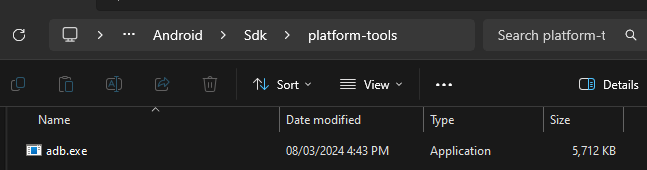
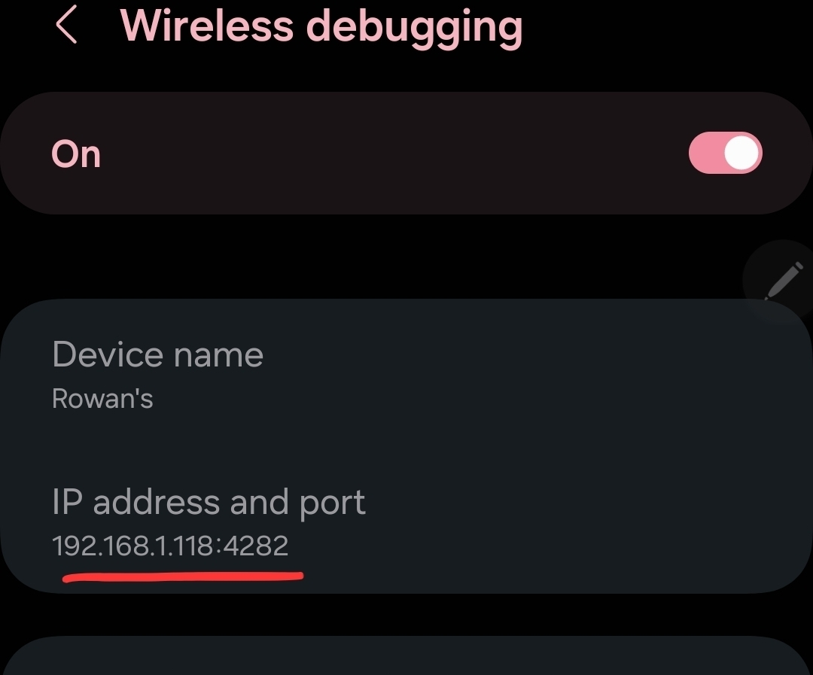

If you’re developing Android games with GameMaker and want to test them on your device without the hassle of cables, you can set up wireless debugging using ADB (Android Debug Bridge). This guide walks you through the steps to configure your PC and Android device for wireless debugging and connect GameMaker to your phone.
ADB is part of the Android SDK platform tools. To find it:
[Your android SDK location]\Android\Sdk\platform-tools

adb.exe. This is the tool you’ll use to connect wirelessly.You’ll need to turn on wireless debugging from your Android’s developer settings:
Now that wireless debugging is on, you’ll need to pair your device with your PC.
adb.exe is located:adb pair [IP address]:[Port]
👉 The IP address and port are displayed on your phone’s Wireless Debugging settings page.

After pairing, you’ll need to connect your device for debugging:
adb connect [IP address]:[Port]
Now that your device is connected:
Wireless debugging can sometimes disconnect randomly.
If this happens simply type adb connect [IP address]:[Port]
again in Command Prompt to reconnect.
That’s it! Now you can build and run your GameMaker projects wirelessly on your Android device. 🎉
|
Article By |
Rowan -
@rowanfuture
|